Module 05: Object Storage Service (OSS)
Agenda & Learning Objectives
- OSS Concept & Architecture
- Storage Classes & Lifecycle
- Data Operations & Access
- Security & Data Protection
- Advanced Features
- Pricing Model
Traditional Storage Server: Pain Points
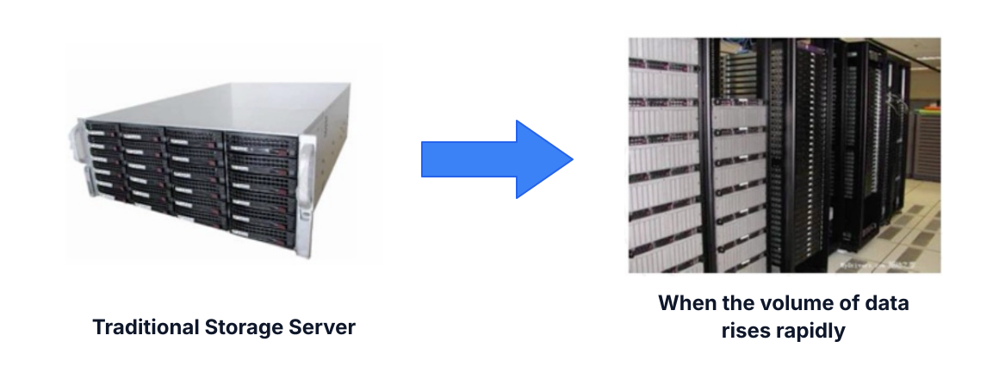
Different Types of Storage
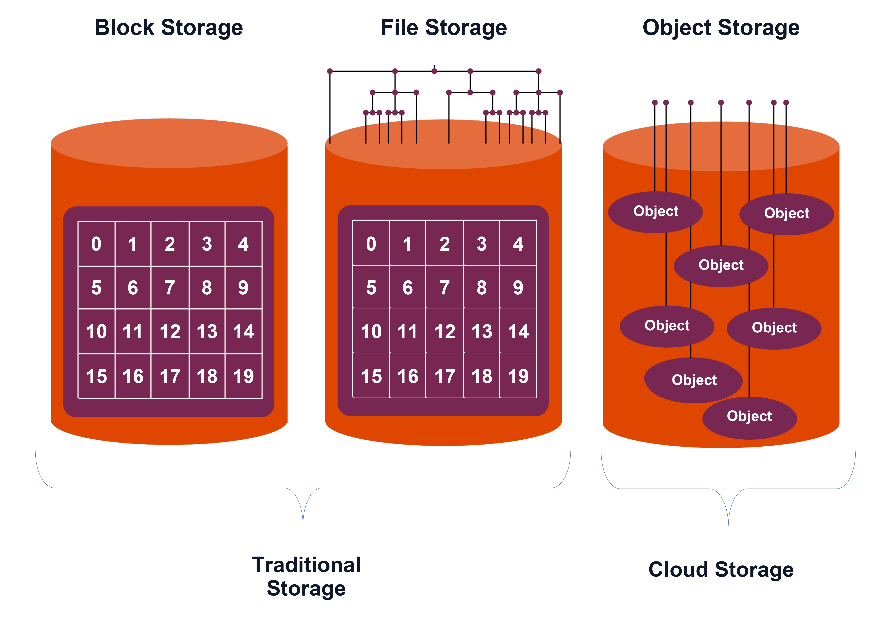
Different Types of Storage (cont.)
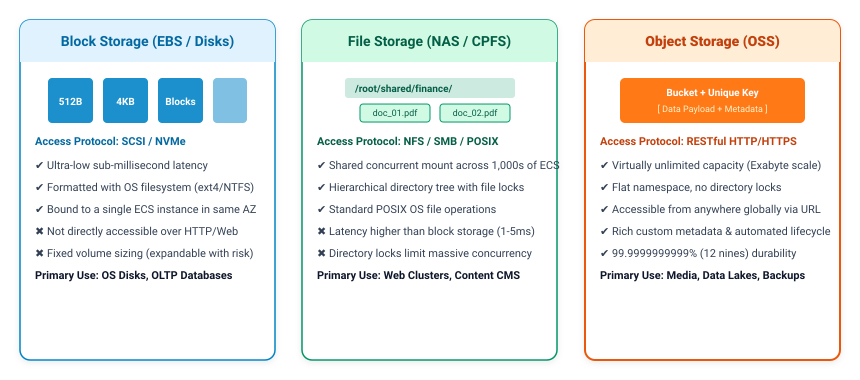
Object Storage Service (OSS)
Alibaba Cloud Object Storage Service (OSS) is a massive, secure, cost-effective, and highly reliable cloud storage service.
OSS enables organizations to store, process, and retrieve any amount of unstructured data from anywhere on the internet. By decoupling storage from physical servers, OSS frees enterprises from capacity planning, disk arrays, and hardware lifecycles while delivering industry-leading durability.
🌐 Massive Scale
Virtually unlimited storage capacity with no individual bucket size limits, handling petabytes effortlessly.
🛡️ 12 Nines Durability
99.9999999999% data reliability powered by multi-copy Pangu triplicate replication across fault domains.
🔒 Enterprise Security
Defense-in-depth protection via RAM, Bucket Policies, WORM compliance, and SSE-KMS hardware encryption.
⚡ High Availability
Up to 99.995% SLA with Multi-Zone redundant storage (ZRS) and cross-region automated replication.
🔗 Cloud Ecosystem
Native integration with Big Data (MaxCompute, EMR), CDN edge delivery, and Serverless Function Compute.
The Anatomy of OSS Data Storage
- Bucket: The top-level logical container for objects. Bucket names are globally unique across all Alibaba Cloud accounts worldwide and cannot be altered after creation. Anchored to a specific region.
- Object: The fundamental data entity stored in OSS. Maximum size varies from 5 GB (simple upload) up to 48.8 TB (multipart upload).
- Key: The complete name that uniquely identifies an object within a bucket (e.g.
photos/2026/banner.jpg, max 1,024 bytes UTF-8). - Metadata: Key-value pairs describing object properties, including standard HTTP headers (Content-Type, Cache-Control) and custom user metadata (
x-oss-meta-*).
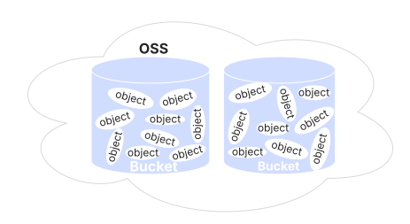
Logical Data Structure & Hierarchy
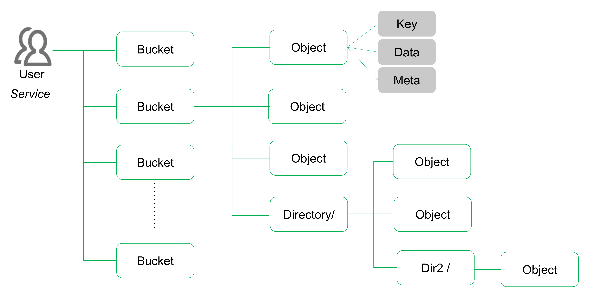
- No Physical Folders: OSS stores objects in a flat key-value namespace. Physical directories and folders do not exist.
- Virtual Directory Simulation: Forward slashes (
/) in keys simulate directory paths (e.g.folder/file.jpg) for easy navigation. - High Concurrency & Scale: Eliminates directory locking and inode limits, allowing massive scale and high-concurrency access.
Storage Classes Spectrum
🔥 Standard
High throughput, real-time access. Ideal for active web assets, mobile apps, streaming media, and gaming.
🌤️ Infrequent Access
Lower storage cost for warm data accessed 1-2 times/month. Real-time access with small retrieval fee.
❄️ Archive
Low storage cost for data accessed 1-2 times/year. Restores in ~1 minute or via Archive Direct Read.
🧊 Cold Archive
Ultra-low cost for long-term retention. 3 restore modes (Expedited <1h, Standard 2-5h, Bulk 5-11h).
🏔️ Deep Cold Archive
Cheapest cloud storage tier (tape replacement). Restore time 12-48 hours. Built for multi-year compliance.
Storage Classes Comparison
| Storage Class | Data Durability | Availability (SLA) | Min. Duration | Min. Billable Size | Data Retrieval Fee | Data Access Latency |
|---|---|---|---|---|---|---|
| Standard | 99.999999999% (LRS) 99.9999999999% (ZRS) |
99.99% (LRS) 99.995% (ZRS) |
None | None | Free | Real-time (Milliseconds) |
| Infrequent Access | 99.999999999% (LRS) 99.9999999999% (ZRS) |
99.90% (LRS) 99.95% (ZRS) |
30 days | 64 KB | Per GB read | Real-time (Milliseconds) |
| Archive | 99.999999999% (LRS) | 99.90% | 60 days | 64 KB | Per GB read | ~1 minute (or Direct Read) |
| Cold Archive | 99.999999999% (LRS) | 99.90% | 180 days | 64 KB | Per GB read | Expedited: <1h | Std: 2-5h | Bulk: 5-11h |
| Deep Cold Archive | 99.999999999% (LRS) | 99.90% | 180 days | 64 KB | Per GB read | Standard: 12h | Bulk: 24-48h |
Automated Lifecycle Policies
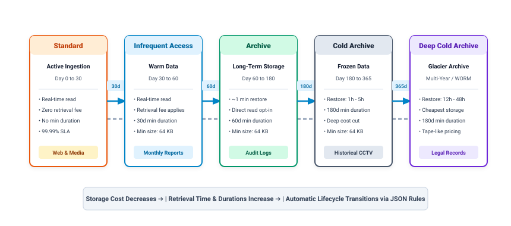
Redundancy Models
Locally Redundant Storage (LRS)
- Single Availability Zone Scope: Stores object replicas across multiple independent storage devices and racks within a single Availability Zone (AZ).
- Durability Rating: Provides 99.999999999% (11 nines) data durability against hardware faults, disk corruptions, and single-rack failures.
- Service Availability SLA: 99.99% operational availability.
- Cost Efficiency: Lowest baseline price per gigabyte; optimal for general-purpose workloads, non-critical data, or when application-layer replication already exists.
Zone-Redundant Storage (ZRS)
- Multi-Zone Active Redundancy: Replicates data across three distinct Availability Zones within the same region.
- Extreme Durability Rating: Delivers 99.9999999999% (12 nines) data durability.
- Enterprise Availability SLA: 99.995% service availability.
- Datacenter-Level Disaster Resilience: Guarantees business continuity and uninterrupted reads/writes even during a complete catastrophic power outage or failure of an entire Availability Zone.
OSS Naming Convention
A key is an object's unique identifier. Every object in a bucket has exactly one key, and the combination of Bucket Name and Object Key uniquely identifies each object across Alibaba Cloud globally.
OSS Naming Convention (cont.)
Key Construction Best Practices
- Key Naming Rules: UTF-8 encoded characters, maximum length 1,024 bytes. Cannot start with forward slash (
/) or backslash (\). - Hierarchical Simulation: Using slashes enables virtual directory folder navigation (e.g.
app/logs/2026/04/trace.log). - Partition Distribution Principle: For hyper-throughput write workloads (>5,000 QPS), avoid strictly sequential keys (e.g.
2026-04-17-001.jpg). Sequential keys hash to adjacent Pangu partitions, creating localized bottlenecks. - Entropy Prefixes: Prepend a randomized hash or MD5 substring to distribute write IOPS across multiple storage partitions evenly (e.g.
a7b9-2026-04-17-001.jpg).
API Listing & Traversal Patterns
- Prefix Queries: Retrieve all objects matching a root pattern (e.g.,
prefix=videos/2026/) without scanning unrelated bucket partitions. - Delimiter Filtering: Setting
delimiter=/collapses sub-keys intoCommonPrefixes, returning virtual directory listings in a single lightweight API call. - Continuation Tokens: Paginate large buckets containing millions of objects using
max-keys=1000and cursor tokens. - Object Tagging: Attach up to 10 key-value tags per object (e.g.
dept=rnd,confidential=true) for fine-grained lifecycle triggers and ABAC access policies.
Upload Modes
1. Simple PutObject
- Operational Model: Single synchronous HTTP
PUTrequest. - Capacity Limit: Supports files up to 5 GB in size.
- Best Suited For: Small web assets, images, configuration files, and mobile user uploads.
- Network Consideration: If an upload drops midway, the entire payload must be resent from byte zero.
2. AppendObject
- Operational Model: Sequentially appends content to the end of an existing object.
- Capacity Limit: Cumulative file size up to 5 GB.
- Best Suited For: Real-time streaming server logs, IoT sensor data, and video stream dumps.
- Architecture Constraint: Appendable objects cannot be converted into Normal objects or altered out-of-order.
3. Multipart Upload
- Operational Model: Splits large files into discrete parts uploaded concurrently.
- Capacity Limit: Supports massive files up to 48.8 TB (10,000 parts).
- Best Suited For: Database backups, 4K/8K video archives, genomic datasets, and big data dumps.
- Enterprise Reliability: Network dropouts only require re-uploading the specific failed part.
Multipart Upload Architecture
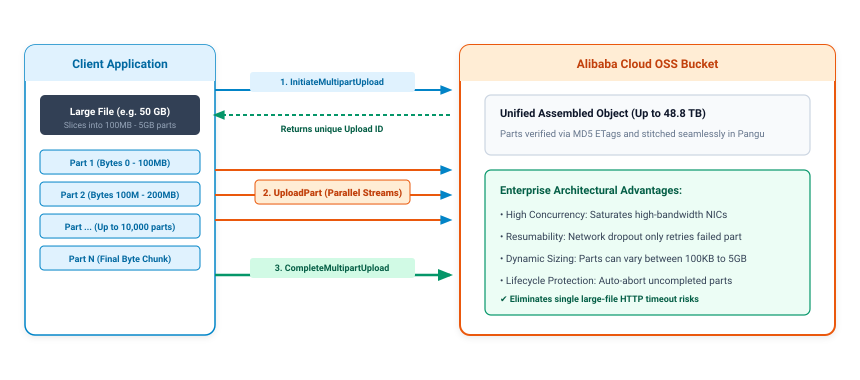
Object Versioning
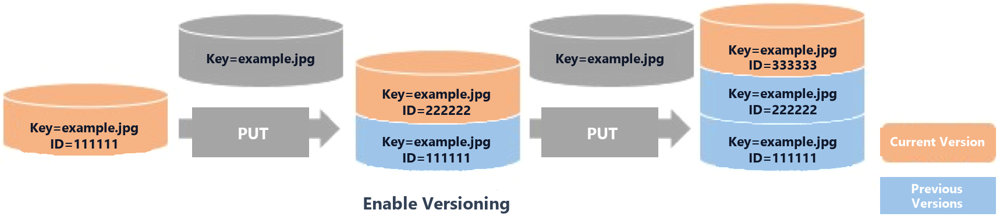
Versioning Mechanics & Recovery
- Version Stacking: When overwriting an object with the same key, OSS generates a unique Version ID. The latest write becomes the Current Version (orange), while prior files remain as Previous Versions (blue).
- Delete Marker Protection: A standard
DELETErequest inserts a Delete Marker rather than removing the file. All historical versions remain intact and can be restored by deleting the marker. - Permanent Purging: Truly deleting an object requires an explicit request specifying the exact
versionIdto eliminate the targeted iteration.
Governance & Cost Control
- Lifecycle Automation: Configure lifecycle policies to transition non-current versions to Infrequent Access or Archive tiers, and expire them after N days to prevent storage sprawl.
- CRR Prerequisite: Object Versioning must be activated on both source and target buckets before establishing Cross-Region Replication (CRR).
- State Immutability: Once versioning is enabled on a bucket, it cannot be disabled; it can only be transitioned to Suspended state.
Cross-Region Replication (CRR)
Cross-Region Replication (CRR)
- Asynchronous Synchronization: Automatically and reliably syncs newly created, overwritten, and deleted objects from a source bucket to a target bucket across regions.
- Geo-Disaster Recovery & Latency: Meets strict compliance mandates for cross-border disaster recovery while serving global users from the nearest regional endpoint.
- Prerequisites & Security: Requires Object Versioning enabled on both buckets; seamlessly supports SSE-KMS encrypted replication and historical data sync.
Replication Time Control (RTC)
- SLA-Backed Speed Guarantee: Enterprise performance guarantee replicating 99.99% of uploaded data within seconds, satisfying mission-critical RPO and RTO demands.
- Real-Time Telemetry: Integrates with CloudMonitor to track replication latency, backlog tasks, and cross-region outbound bandwidth with live alerts.
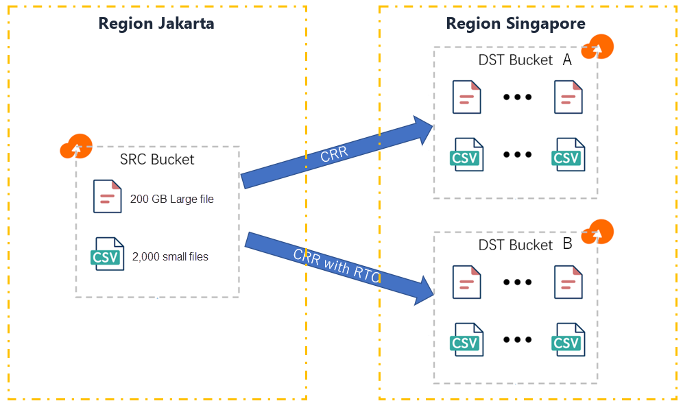
Back-to-Origin: Mirroring
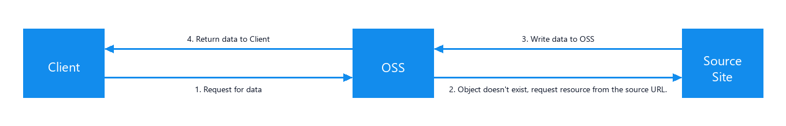
Mirroring Execution Workflow
- Client Requests Object: The client issues an HTTP
GETorHEADrequest to the OSS bucket for a specific object key. - 404 Trigger & Origin Fetch: If the object is absent from OSS, OSS intercepts the 404 condition and autonomously requests the file from the configured Source Site.
- Write & Cache in OSS: OSS writes the returned payload directly into the bucket as a persistent object, preserving original headers and metadata.
- Stream to Client: OSS simultaneously delivers the data stream to the client. All subsequent requests are served directly from OSS with zero origin load.
Architectural Benefits & Use Cases
- Zero-Downtime Data Migration: Migrate active enterprise services from on-premises NAS/SAN or AWS S3 without pre-copying petabytes or scheduling maintenance windows.
- On-Demand "Hot Data" Ingestion: Only files actively requested by end-users are ingested and stored in OSS, eliminating migration costs for cold/stale historical data.
- Origin Offloading: Once mirrored, high-concurrency read traffic is absorbed by Alibaba Cloud OSS's global distributed network instead of the origin server.
- Granular Rule Matching: Supports scoping mirror rules by object prefix (e.g.
/images/) and configuring custom HTTP header pass-through.
Back-to-Origin: Redirection
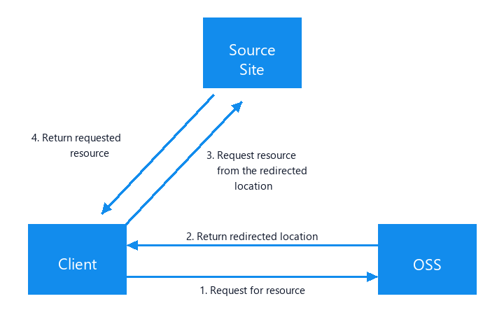
Redirection Execution Workflow
- Request for Resource: The client sends an HTTP request to the OSS bucket for a specific resource path.
- Return Redirect Location: OSS evaluates redirection rules and responds to the client with an HTTP 301/302 status code and the target Origin URL in the Location header.
- Follow Redirect to Origin: The client receives the 3xx response and automatically directs its request to the Source Site.
- Direct Origin Response: The source site delivers the requested content directly to the client. OSS DOESN'T store the object.
Architectural Comparison & Decision Guide
- Zero OSS Storage Consumption: Ideal for dynamic, personalized, or non-cacheable resources where storing duplicates in OSS is unnecessary or wasteful.
- Legacy URL & Domain Rewriting: Seamlessly route deprecated path conventions, restructured folders, or old domain references to new backend services.
Multi-Layer Access Control
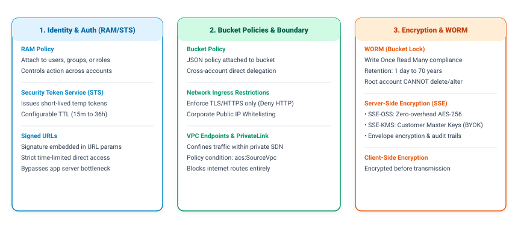
RAM Policy
Identity-Based Authorization
RAM Policies are permission policies attached directly to RAM identities (Users, Groups, or Roles) to govern what actions they can perform on Alibaba Cloud resources:
- Identity Attachment: Applied to RAM users or roles; defines the maximum permissions granted to the identity across all services.
- No Principal Field: Does not define a
Principalelement because the identity to which it is attached is inherently the principal. - Centralized IAM Governance: Ideal for enforcing least privilege for internal developers, applications, and ECS instance RAM roles.
Grants permission to list objects and read files from company-bucket:
{
"Version": "1",
"Statement": [
{
"Effect": "Allow",
"Action": [
"oss:ListObjects",
"oss:GetObject"
],
"Resource": [
"acs:oss:*:*:company-bucket",
"acs:oss:*:*:company-bucket/*"
]
}
]
}
Bucket Policy
Resource-Based Authorization
Bucket Policies are configured directly on an OSS bucket to control which principals can access the bucket and under what specific conditions:
- Bucket-Level Attachment: Managed directly on the target bucket; grants access without modifying central RAM policies.
- Mandatory Principal Field: Must specify the
Principal(e.g. another Alibaba Cloud account, RAM user ARN, or*). - Cross-Account & Conditional Sharing: Enables secure cross-account data sharing and condition-based enforcement (IP whitelists, HTTPS, VPC).
Allows an external account to read objects only from a specific IP subnet:
{
"Version": "1",
"Statement": [
{
"Effect": "Allow",
"Action": [
"oss:GetObject"
],
"Principal": [
"acs:ram::123456789012****:root"
],
"Resource": [
"acs:oss:*:*:company-bucket/*"
],
"Condition": {
"IpAddress": {
"acs:SourceIp": "192.168.1.0/24"
}
}
}
]
}
Write Once, Read Many (WORM)
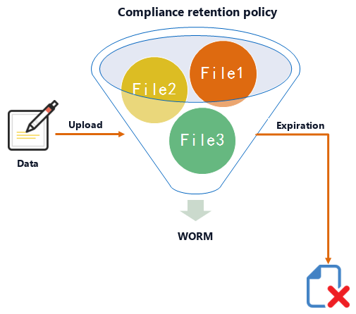
- Immutable Retention: Objects cannot be deleted, overwritten, or modified by any entity—including RAM Administrators and the Alibaba Cloud Account Root user—during the retention period (1 day to 70 years).
- InProgress State: Provides a 24-hour verification window upon policy creation. The bucket lock can still be tested or canceled during this time.
- Locked State: Once locked, the policy becomes permanent and irreversible. The retention period can only be extended, never shortened.
- Tamper-Proof Protection: Guarantees append-only storage, protecting data against ransomware, malicious insiders, and accidental deletion.
- Regulatory Compliance: Fully complies with strict SEC Rule 17a-4(f), FINRA Rule 4511, and CFTC 17 CFR 1.31 mandates.
Server-Side Proxy Upload Bottlenecks
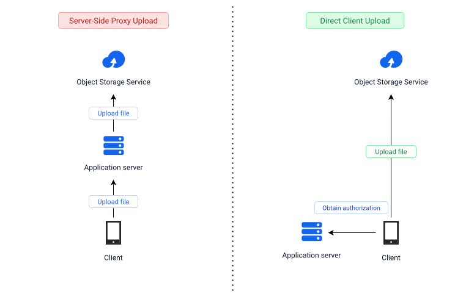
The Proxy Upload Problem
Traditionally, web and mobile clients upload files to an intermediate application server, which then proxies them to OSS:
- Double Bandwidth Consumption: Every byte travels twice (Client ➔ App Server ➔ OSS), doubling network latency and outbound transfer costs.
- Application Server Exhaustion: Web servers waste critical CPU, RAM buffers, and worker threads holding connections for slow client uploads.
- Scalability Bottleneck: Concurrent large file uploads (videos, high-res images) exhaust server capacity, creating a single point of failure.
The Solution: Direct Client Upload
Clients bypass the application server entirely, uploading payloads straight to OSS:
- Zero Server Data Load: Massive files stream directly into Alibaba Cloud's distributed Pangu storage tier without touching application memory.
- The Authorization Challenge: How can untrusted clients upload directly to private, unexposed buckets without embedding long-term AccessKey credentials in client code?
Direct Client Upload with "Signed URLs"
Resolving the Upload Dilemma
Building directly on the Direct Client Upload architecture, Pre-Signed URLs provide secure, time-limited delegated authorization without exposing long-term credentials:
- Step 1: Obtain Authorization: The client authenticates with the application server (e.g. JWT/session) and requests an upload permit for a designated object key.
- Step 2: Signature Generation: The application backend uses its internal RAM credentials to generate a pre-signed URL embedding an HMAC-SHA1 signature and expiry window.
- Step 3: Direct Streaming to OSS: The client issues an HTTP
PUTorPOSTrequest directly to the OSS endpoint using the signed URL, completely bypassing the app server. - Strict Expiry Enforcement: The URL terminates automatically after its duration (e.g. 15 mins). Subsequent requests receive
HTTP 403 Forbidden.
Example Signed URL (Direct HTTP PUT / GET)
https://my-bucket.oss-ap-southeast-5.aliyuncs.com/uploads/contract.pdf?OSSAccessKeyId=LTAI5t7example99&Expires=1776412800&Signature=vR3q9fN5%2BexampleWv7%3D
| URL Parameter | Architectural Function |
|---|---|
OSSAccessKeyId |
Identifies the backend RAM user or STS temporary credential granting permission. |
Expires |
Unix epoch timestamp establishing the exact second authorization terminates. |
Signature |
HMAC cryptographic digest calculated over HTTP method, URI, and expiration. |
security-token |
Included when generated via Security Token Service (STS) temporary credentials. |
Server-Side Encryption (SSE)
SSE-OSS (Native AES-256)
- Zero Overhead: Automatic encryption at rest using standard AES-256 before writing data to underlying Pangu storage devices.
- Fully Managed: Cryptographic keys are managed, rotated, and secured by Alibaba Cloud with zero additional cost.
- Transparent Decryption: Stored objects are automatically decrypted on-the-fly upon authorized access with zero application code changes.
SSE-KMS (Envelope Encryption & BYOK)
- Envelope Encryption: Customer Master Keys (CMKs) protect random unique Data Encryption Keys (DEKs) generated per object.
- Hardware HSM & BYOK: Import proprietary enterprise keys into dedicated FIPS 140-2 Level 3 HSMs for sovereign control.
- Instant Revocation: Revoking KMS key access instantly disables data reads; every cryptographic operation is audited in ActionTrail.
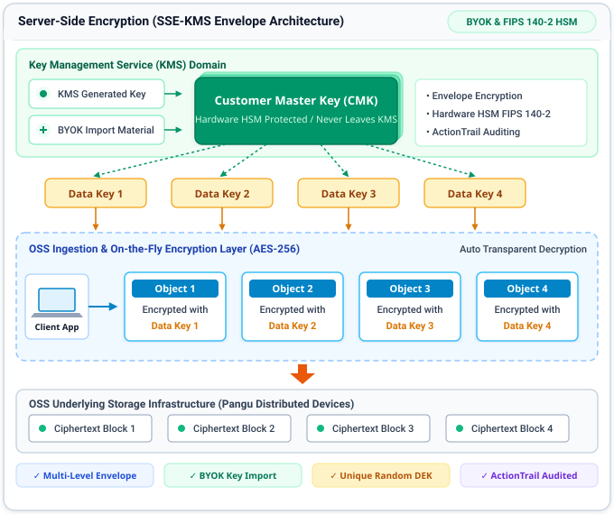
Service Private Access
PrivateLink Interface Endpoints
- Allocate Elastic Network Interfaces (ENIs) with private IP addresses directly within your Consumer VPC in your region.
- Multi-Zone High Availability: Deployed across redundant availability zones (Zone G and Zone H) with automated cross-zone health checks and failover.
- Direct Private Backbone Routing: An Endpoint Connection tunnels traffic privately to Alibaba Cloud managed services (OSS, PAI, Model Studio) without touching the public internet.
Security & Network Isolation Advantages
- Layer 4 Security Groups: Unlike classic gateway endpoints, Interface Endpoints allow binding VPC Security Groups directly to ENIs to enforce strict IP and port firewalls.
- No IP Address Conflicts: Uses private IPs from your own VPC subnet CIDR blocks, preventing routing collisions in enterprise hybrid cloud environments.
- Zero NAT / Internet Exposure: Confidential workloads remain strictly inside private subnets without requiring Elastic IPs or NAT Gateways.
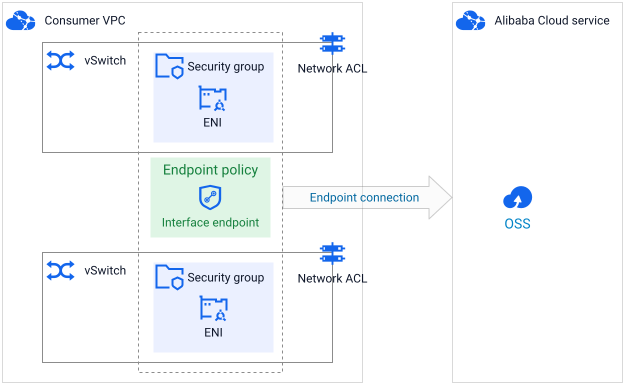
VPC Boundary
Defense-in-Depth: From Network to Policy
- Continuous Private Routing: Having established PrivateLink Interface Endpoints or regional Internal Endpoints (e.g.
oss-ap-southeast-1-internal.aliyuncs.com), all application traffic flows through high-speed internal SDN fabric. - Zero Egress Bandwidth Cost: All data transferred between ECS instances and OSS buckets located within the same region (e.g., Jakarta) is 100% FREE with no data egress charges.
- The Security Gap: Network endpoints secure the outbound path, but standard OSS buckets remain accessible from public endpoints unless explicitly locked down at the resource layer.
- Total Perimeter Lockdown: Combine VPC private routing with resource-based policies to mandate that only verified internal VPC requests are permitted.
Enforcing Network Boundaries via Bucket Policy
Attach a resource-based Bucket Policy that explicitly DENIES all requests originating outside your designated VPC perimeter, regardless of IAM permissions:
{
"Effect": "Deny",
"Principal": "*",
"Action": "oss:*",
"Resource": "acs:oss:*:*:my-bucket/*",
"Condition": {
"StringNotEquals": {
"acs:SourceVpc": "vpc-t4n8example92"
}
}
}
Even if valid AccessKey credentials are leaked externally, requests originating from the public internet or unauthorized VPCs are blocked instantly by the OSS API Gateway.
Static Website Hosting
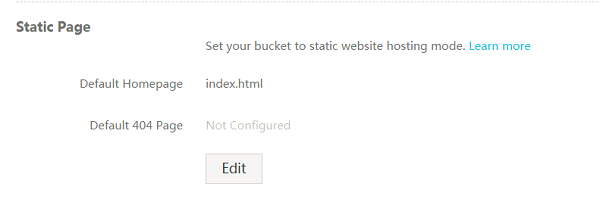
Why Use Static Website Hosting?
- Zero Server Management: Completely eliminates OS patching, kernel upgrades, and web server software (Nginx/Apache) maintenance. No ECS or container runtime required.
- Effortless Auto-Scaling: Handles massive viral traffic surges and sudden visitor spikes natively without configuring Server Load Balancers (SLB) or scaling groups.
- Substantial Cost Efficiency: Removes continuous 24/7 compute billing; you pay strictly for the actual storage volume stored and network bandwidth transferred.
- Eliminated Attack Surface: Pure client-side static assets eliminate backend code execution risks, SQL injections, and exposed server ports.
Key Capabilities
- Index & 404 Routing: Automatic root document resolution (
index.html) and custom 404 redirection—essential for modern React, Vue, & Angular SPA routers. - Custom Domain (CNAME): Easily bind your company's custom domain (e.g.
www.mycompany.com) directly to the bucket endpoint with zero friction. - Free Automated SSL/TLS: One-click automated HTTPS certificate issuance, provisioning, and automatic renewal via Alibaba Cloud SSL Certificates Service.
- CDN Edge Acceleration: Seamlessly pair with Alibaba Cloud CDN (2,800+ global edge nodes) for sub-second latency and lower outbound traffic costs.
OSS Transfer Acceleration
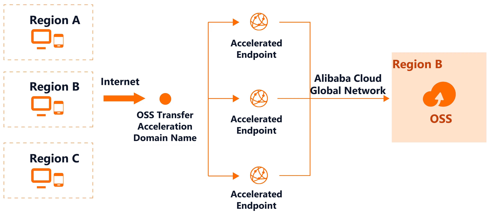
Multi-Region Edge Ingestion & Global Backbone
- Optimized Local Ingestion: Clients across distributed regions connect to the nearest Accelerated Endpoint via intelligent BGP routing, minimizing public internet hops.
- Private Global Backbone: Traffic entering the endpoint is backhauled across Alibaba Cloud's dedicated private fiber network directly to the destination bucket in Region B.
- Latency & Throughput Optimization: Deep protocol stack tuning and dynamic path selection eliminate internet congestion, yielding 50% to 300% faster transfers.
Seamless Endpoint Switching & Enterprise Security
- Dedicated Acceleration Domain: Enable acceleration with zero code refactoring by simply switching the endpoint from
*.aliyuncs.comto*.oss-accelerate.aliyuncs.com. - End-to-End Encryption: Strict TLS/HTTPS session encryption is enforced across the entire path from client devices to the final storage cluster.
- Cross-Border Operations: Crucial for global asset synchronization, international mobile app uploads, and distributed media distribution.
Image Processing (IMG)
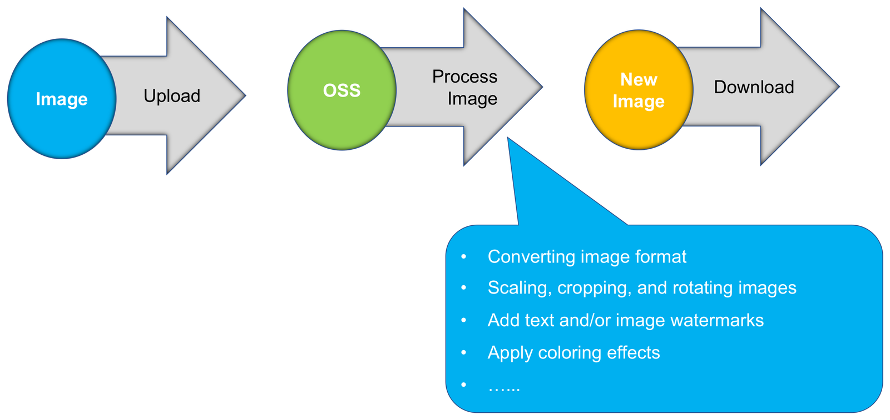
Serverless Media Processing Engine
Alibaba Cloud OSS Image Processing (IMG) is a fully managed, serverless media processing engine built directly into OSS storage. By uploading a single high-resolution master image, applications can dynamically process and transform media on-the-fly via simple RESTful APIs without provisioning, scaling, or managing dedicated media rendering server clusters.
Core Transformation Capabilities
- Dynamic Format Transcoding: Convert heavy JPEG and PNG assets to modern WebP format on-the-fly, reducing bandwidth payload sizes by 30% to 50% without quality loss.
- Scaling, Cropping & Rotation: Dynamically resize images to target pixel dimensions, smart crop to aspect ratios, and rotate 0°–360° seamlessly.
- Dynamic Watermarking & Effects: Overlay real-time text or image watermarks with customized opacity and coordinates, sharpen blurry elements, and adjust contrast.
IMG Access Methods: Parameter vs. Style Mode
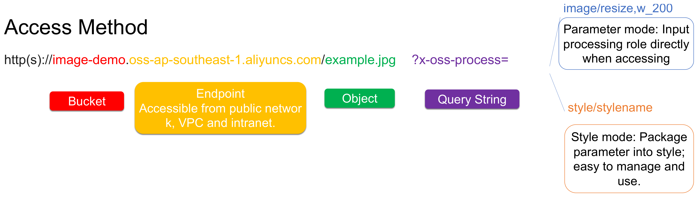
Parameter Mode (Direct RESTful Rule)
- Inline Invocation: Pass processing commands directly in the query string (e.g.
?x-oss-process=image/resize,w_300,h_200,m_fill). - Multi-Action Chaining: Chain sequential operations using forward slashes (e.g.
.../resize,w_400/watermark,text_.../format,webp). - Maximum Client Flexibility: Ideal for rapid prototyping, agile frontends, and dynamic client-specified rendering layouts.
Style Mode (Pre-Packaged Aliases)
- Pre-Configured Presets: Bundle complex multi-step rules into concise named style aliases in the OSS console (e.g.
?x-oss-process=style/thumb-grid). - Cleaner URLs & Encapsulation: Conceals internal image manipulation parameters, protecting proprietary dimensions from client inspection.
- Centralized Fleet Updates: Update style dimensions or watermark logic globally in the console with zero client application redeployments.
Event-Driven Serverless Integration
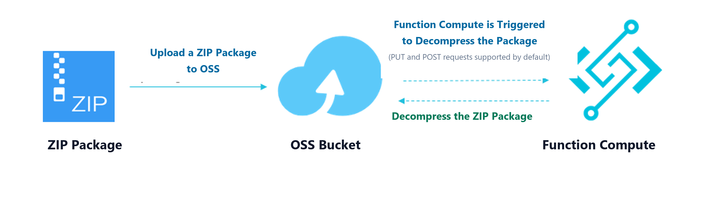
Event-Driven Execution Mechanism
- Automated Triggering: Uploading an object (PUT/POST, e.g. a
.ziparchive) instantly dispatches an asynchronous event notification to Function Compute (FC). - Zero Server Management: Compute instances spin up on-demand in milliseconds to execute processing logic without maintaining 24/7 dedicated worker VMs.
- Granular Event Filters: Target specific storage events (e.g.
oss:ObjectCreated:*) with customizable folder prefix and file extension suffix filters.
Automated In-Memory Decompression & Pipelines
- Streamlined Extraction: The FC function automatically decompresses the package in-memory and writes individual extracted files back to the destination OSS bucket.
- Elastic Scalability: Seamlessly processes massive concurrent package uploads by autoscaling FC instances during sudden traffic surges.
- Enterprise Workflows: Extends naturally to automated media transcoding, real-time malware scanning, and ETL ingestion pipelines.
OSS Monitoring with CloudMonitor
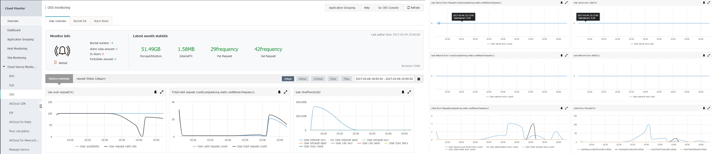
Real-Time Metrics & Capacity Tracking
- Storage & Objects: Live storage utilization (GB), object count, and tier breakdown (Standard, IA, Archive).
- Request Traffic: Real-time PUT/GET frequencies and traffic flow (Internet, Intranet VPC, CDN, and Cross-Region sync).
- Service Availability: Continuous tracking of availability percentages and SLA compliance.
Proactive Diagnostics & Custom Alarms
- Client Errors (4xx): Isolate HTTP 403 Forbidden (RAM authorization), 404 missing objects, and client timeouts.
- Server Errors (5xx): Immediate tracking of server exceptions, API rate throttling, and backend health.
- Automated Alarms: Custom metric thresholds with instant notification via SMS, Email, DingTalk, and Function Compute.
OSS Log Management
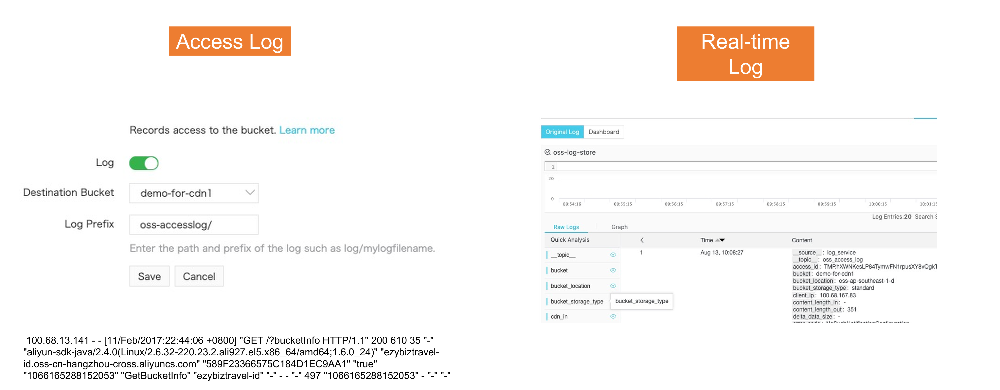
Bucket Access Logging (Access Log)
- Target Bucket Storage: Automatically delivers hourly raw access logs to a designated destination bucket.
- Zero Performance Impact: Asynchronous log generation ensures zero read/write request latency overhead.
- Comprehensive Audit: Records client IP, HTTP status, request payload size, and caller RAM identity.
Real-Time Log Analysis (SLS)
- Sub-Second Ingestion: Streams access logs in real time directly into Log Service (
oss-log-store). - Instant SQL Analytics: Execute interactive SQL queries to isolate 4xx/5xx spikes, malicious IPs, or traffic spikes.
- Pre-Built Dashboards: Instant visualization of access trends, top downloaded objects, and client distribution.
OSS Pricing Architecture
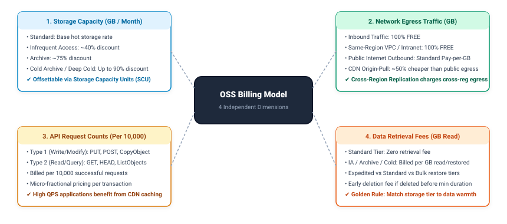
Storage Tier vs. Retrieval Cost
| Storage Class | Relative Storage Cost | Data Retrieval Cost | Min. Storage Duration Penalty | Recommended Access Pattern |
|---|---|---|---|---|
| Standard | Base Rate (1.0x) | FREE (Zero cost) | None (Pay for exact seconds stored) | Hot data accessed multiple times daily |
| Infrequent Access | ~40% Lower (~0.6x) | Low Retrieval Fee per GB | 30 Days (Deleting on Day 5 billed for 30) | Warm data accessed 1-2 times per month |
| Archive | ~75% Lower (~0.25x) | Moderate Retrieval Fee per GB | 60 Days (Deleting on Day 10 billed for 60) | Cold data accessed 1-2 times per year |
| Cold Archive | ~85% Lower (~0.15x) | Higher Retrieval Fee per GB | 180 Days (Early delete penalty applies) | Historical records accessed once in 3 years |
| Deep Cold Archive | ~90% Lower (~0.10x) | Highest Retrieval Fee per GB | 180 Days (Early delete penalty applies) | Glacier compliance records rarely ever read |
Cost Optimization Strategies
- Move objects lifecycle rules that older than 30 days to IA, 90 days to Archive, and 365 days to Cold Archive.
- Pre-purchased capacity packages offering up to 50%+ discounts with 1-year or 3-year commitments.
- Clean orphaned multipart uploads with lifecycle rules that abort uncompleted multipart uploads after 7 days to eliminate hidden chunk charges.
- Reduce public internet egress fees and offload repeated GET API request charges with Alibaba Cloud CDN.
- Keep all intra-cloud analytics and data pipelines strictly on internal endpoints for zero network cost with Internal VPC Endpoints.
Practice Scenario 1: Media Streaming Ingestion & Distribution
- AUpload videos via Simple PutObject to an Infrequent Access bucket; distribute videos directly through public OSS endpoints; use manual scripts to delete videos after 60 days.
- BIngest videos using Multipart Upload via Transfer Acceleration; front the Standard bucket with Alibaba Cloud CDN; configure lifecycle rules to transition to Infrequent Access at 14 days and Archive at 60 days.
- CIngest videos via AppendObject directly to Deep Cold Archive; attach public Elastic IP addresses to the bucket; utilize Server-Side Encryption with Customer Master Keys (SSE-KMS).
- DStore all raw footage in an EBS ESSD disk array mounted to an ECS cluster; replicate footage to OSS Standard ZRS using Cross-Region Replication; disable CDN to prevent cache misses.
Scenario 1: Solution & Architectural Analysis
Practice Scenario 2: Financial Audit & Legal Immutability
- AEnable Object Versioning on the bucket; configure a RAM Policy denying oss:DeleteObject for all RAM users except the Root account; apply SSE-OSS encryption.
- BSet bucket ACL to Private; configure Cross-Region Replication to duplicate records to another region; generate pre-signed URLs with a 7-year expiration timestamp.
- CConfigure an OSS Bucket Lock (WORM) policy locked for a 7-year retention period; enable Server-Side Encryption with Customer Master Keys via KMS (SSE-KMS BYOK).
- DDeploy an ECS instance running an NFS server with ext4 write protection; mount the disk over VPC PrivateLink; configure hourly snapshots to OSS Standard.
Scenario 2: Solution & Architectural Analysis
Practice Scenario 3: Healthcare Imaging Lifecycle & Security
- ACreate an OSS Bucket with Zone-Redundant Storage (ZRS); configure an automated lifecycle rule to transition objects to Deep Cold Archive after 30 days; attach a Bucket Policy denying requests where acs:SourceVpc does not match the hospital VPC; access via VPC Endpoints.
- BStore all scans permanently in an OSS Standard LRS bucket; configure an IP Whitelist allowing only the hospital's public NAT gateway IP address; use manual cron jobs to archive scans to tape.
- CUpload scans directly to Deep Cold Archive; configure Transfer Acceleration to bypass the public internet; generate pre-signed URLs with 10-year validity.
- DDeploy a shared NAS Extreme file system inside the VPC; replicate files daily to OSS Archive via the public internet; attach a RAM user policy to all doctors.
Scenario 3: Solution & Architectural Analysis
Module 05: Object Storage Service (OSS)
Module 06: ApsaraDB for RDS (Relational Database Service)